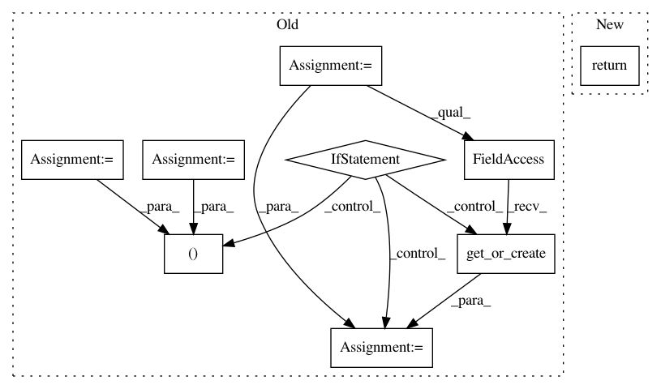

8a09e29f99149f5c097aa7866e4e4fce469aaeeb,polyaxon/libs/repos/utils.py,,get_code_reference,#Any#Any#,8
Before Change
repo = project.repo or project.external_repo
if commit:
try:
return CodeReference.objects.get(repo=repo, commit=commit)
except ObjectDoesNotExist:
return None
// If no commit is provided we get the last commit, and save new ref if not found
try:
last_commit = repo.last_commit
except ValueError:
return None
code_reference, _ = CodeReference.objects.get_or_create(repo=repo, commit=last_commit[0])
return code_reference
RefModel = Union["Experiment",
After Change
if project.has_repo:
repo = project.external_repo
return _get_external_repo_code_reference(repo=repo, commit=commit)
else:
repo = project.repo
return _get_repo_code_reference(repo=repo, commit=commit)
In pattern: SUPERPATTERN
Frequency: 3
Non-data size: 9
Instances
Project Name: polyaxon/polyaxon
Commit Name: 8a09e29f99149f5c097aa7866e4e4fce469aaeeb
Time: 2019-02-16
Author: mouradmourafiq@gmail.com
File Name: polyaxon/libs/repos/utils.py
Class Name:
Method Name: get_code_reference
Project Name: polyaxon/polyaxon
Commit Name: 34c9393d21713b0b0445286ad085a46ec5bb249a
Time: 2018-05-19
Author: mouradmourafiq@gmail.com
File Name: polyaxon/users/views.py
Class Name: LoginView
Method Name: dispatch
Project Name: polyaxon/polyaxon
Commit Name: 2a822c1ea9bfcd972574e639114a03ea940c7b49
Time: 2018-06-13
Author: mouradmourafiq@gmail.com
File Name: polyaxon/libs/repos/utils.py
Class Name:
Method Name: get_latest_code_reference